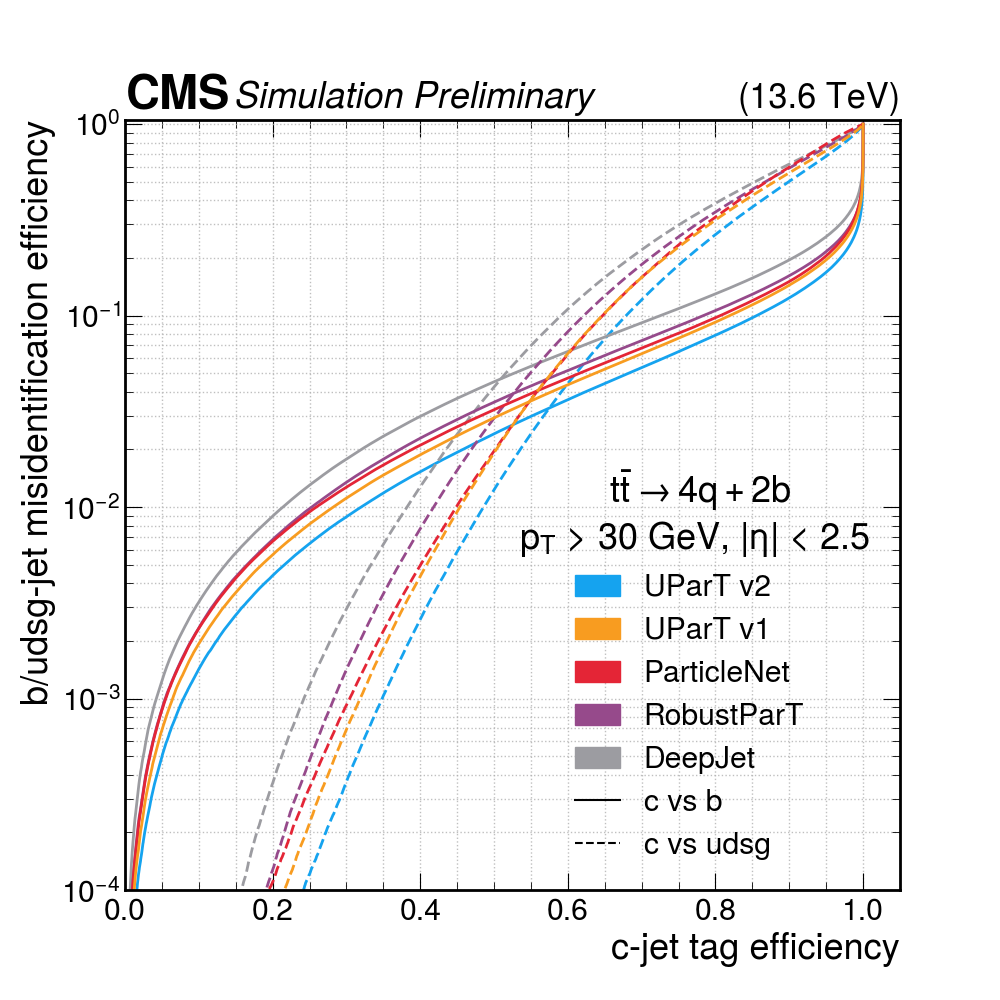
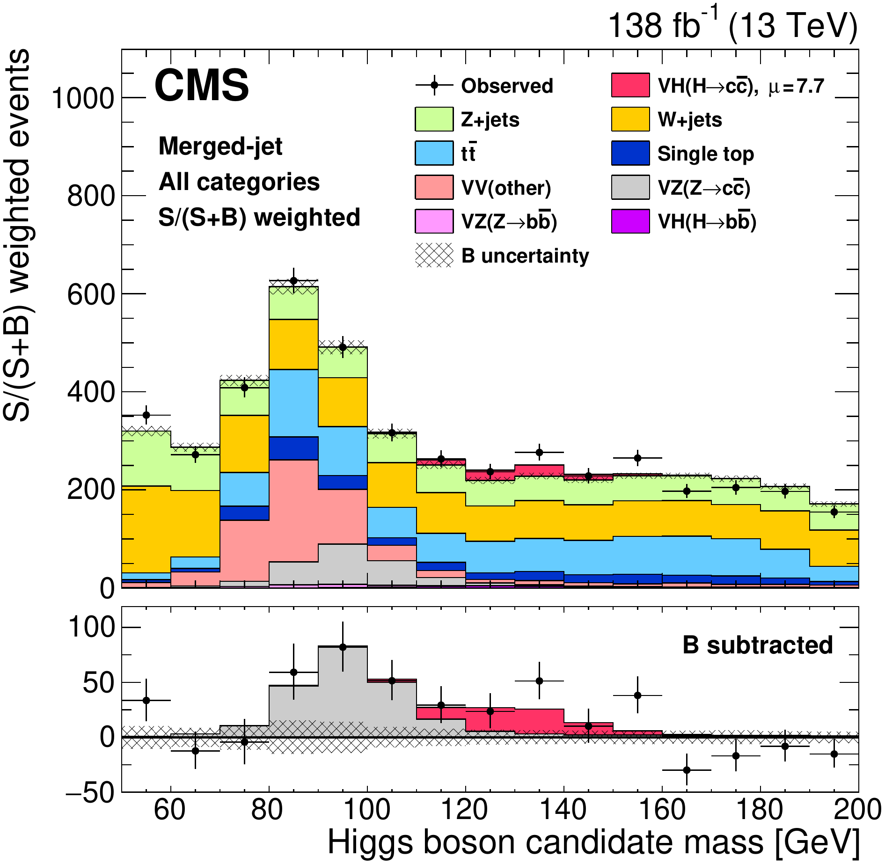
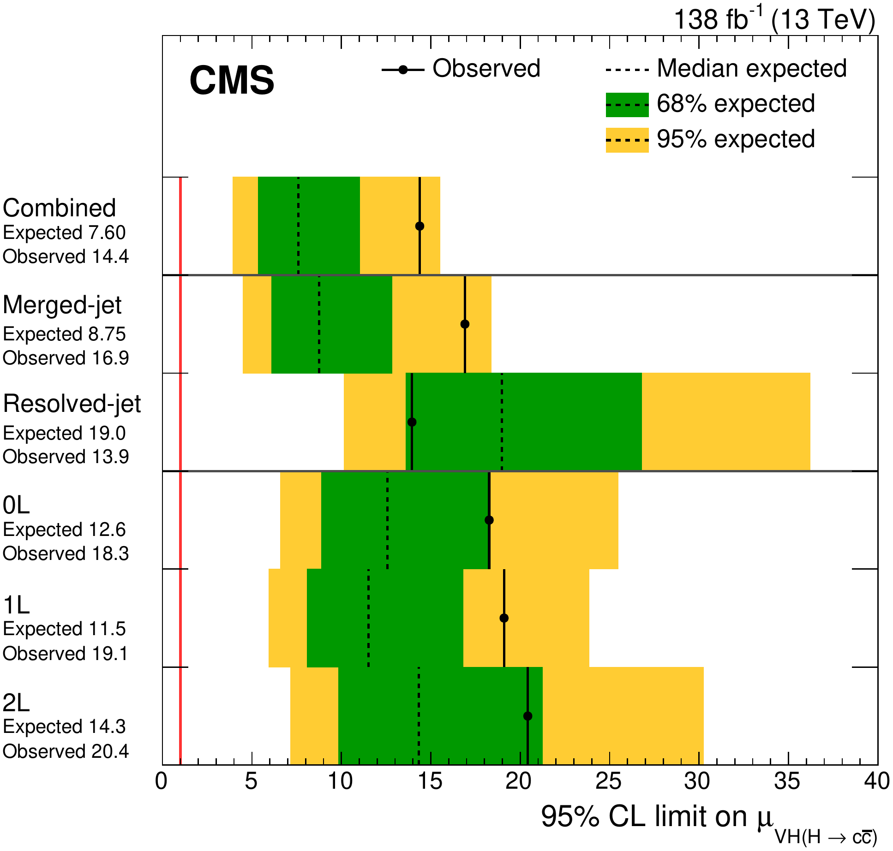

𝓑(H → cc) ≈ 2.9%, about 20× below bb, with huge QCD backgrounds and hard c tagging (slide 3)
κc = yc / ycSM (SM: 1)
Flavour-compatible BSM, e.g. spontaneous flavour violation, allows |κc| ~ 3: current sensitivity is entering this region
SFV: PRL 123 (2019) 031802 κc in SFV: JHEP 02 (2025) 067
CMS, Rep. Prog. Phys. 89 (2026) 087801 (suppl.); κc point: separate ttH+VH result, not in the fit
Does the Higgs give charm its mass?
Charm tagging
Finding c jets between b and light jets
CMS-DP-2025-081
Charm signature
c-hadron mass and lifetime lie between light and b: a secondary vertex (SV) like b jets, but closer to the primary vertex, so easily mistaken for light jets
Algorithm evolution at CMS
Likelihood / BDT
JPlikelihood of track impact parameters
CSV, CSVv2likelihood ratio, then MLP
Run 2 c taggerBDT: CvsL, CvsB
Deep NN
DeepCSVdense DNN (4 × 100), b/c/light classes
DeepJet1×1 convolutions + LSTMs on all jet constituents
Particle cloud
ParticleNetgraph NN (dynamic graph CNN)
UParTtransformer with pairwise interaction features, adversarial training
Run 1 → Run 3: likelihoods and trees → dense nets → graphs and attention

tt simulation, 13.6 TeV · solid: c vs b, dashed: c vs light
UParT v2 (blue): lowest mis-ID
How CMS probes κc
In the decay, in production, and through the Higgs width
slides 5–10
Direct H → cc
rate ∝ κc2/ΓH · VH, ttH, boosted (mostly ggH)
|κc| < 3.5 (2.7)ttH + VH
PRL 131 (2023) 061801 · PRL 136 (2026) 011801 · PRL 131 (2023) 041801
slides 11–13
H + charm production
cg → cH: κc in the production vertex · H → γγ, WW
|κc| < 47 (51)
JHEP 11 (2025) 060 · JHEP 08 (2026) 051
slide 14
Indirect: Higgs rates and width
on-shell and new off-shell H → ZZ → 4ℓ
κc ∈ [−3.3, 2.8] … [−8.6, 7.5] by assumptions
PRD 112 (2025) 112001 · arXiv:2607.23352
slide 14
Rare exclusive decays
H → J/ψ γ, ψ(2S) γ: sensitive to the sign of κc
−166 < κc < 208
PLB 865 (2025) 139462
μ = σ𝓑/(σ𝓑)SM · ΓH = total Higgs width · μ limits and κc intervals at 95% CL, observed (expected)
All κc results: Run 2 (13 TeV, up to 138 fb−1) · Run 3 so far: better triggers (slide 16)
VH(H → cc): strategy
Cleanest signature: the W or Z decays to leptons
PRL 131 (2023) 061801 · CMS-HIG-21-008
0ℓ · Z → νν1ℓ · W → ℓν2ℓ · Z → ℓℓ
Main backgrounds V+jets and tt, normalised in control regions
pTH = 300 GeV
Resolved · two jets>95% of the signal two DeepJet c-tagged jets fit to a BDT score
Merged · one large-R jet
<5% of the signal, but much less background ParticleNet cc tagging in 3 purity categories + mass regression fit to m(Hcand)
below
above
Validation: the same analysis finds VZ(Z → cc) at 5.7σ, so the c tagging and background model work (details → backup)

Merged-jet only: candidate mass; bottom, after background subtraction: VZ (grey, ≈ 90 GeV) and VH (red)
VZ(Z → cc): the Z peak is seen
VH(H → cc): results
The most sensitive single channel of Run 2
PRL 131 (2023) 061801 · CMS-HIG-21-008

Merged jet drives the sensitivity: expected 8.75 vs 19.0 resolved
Combined: observed 14.4, expected 7.60
red line: the SM, μ = 1
q = −2Δln L vs |κc| (supplementary); 95% CL where q = 3.84 (dashed)
observed: 1.1 < |κc| < 5.5
SM expected: |κc| < 3.4
95% CL · observed (expected)
μ < 14 (7.6) 1.1 < |κc| < 5.5 (< 3.4)
Statistics-limited: the statistical uncertainty is 85% of the total (breakdown → backup)
μ limits with CLs; κc interval from the profile-likelihood scan
Expected μ < 7.6: the best single channel, and still statistics-limited
Boosted H → cc
Gluon-fusion enriched: one large-radius jet at high pT
PRL 131 (2023) 041801 · CMS-HIG-21-012
① pTH > 450 GeV
High-pT Higgs bosons suppress QCD · signal 55% ggF, 25% VBF, 20% VH · cc in one large-radius jet; soft drop removes soft, wide-angle radiation and sharpens the jet mass mSD
② DeepDoubleX tagger
Deep neural network on low-level jet features: passing (signal-rich) and failing (background-rich) regions · decorrelated from mSD, so QCD is estimated from data in the failing region
③ Fit mSD
Simultaneous binned fit of mSD in all tagger regions; upper limit from the profile likelihood ratio
σ𝓑 / (σ𝓑)SM < 47 (39)
95% CL · observed (expected) · no κc interpretation in the paper
Passing region · H → cc dashed (×200)
Z → cc observed for the first time in Z+jets, well over 5σ
ttH(H → cc)
The whole analysis in one fit
PRL 136 (2026) 011801 · CMS-HIG-24-018
Post-fit ParT discriminants in every control and signal region (p-value 0.85)
0ℓ · 1ℓ · 2ℓ
each: 5 tt+jets CRs + 4 SRs
Summed signal score DttX > 0.85 → SR by ttH/ttZ and cc/bb; 0.6–0.85 → CR of the leading tt+jets class
One fit: ttH(cc), ttH(bb), ttZ(cc), ttZ(bb) and every tt+jets component
ttH(H → cc): strategy and results
ttH(cc) and ttH(bb) together, ttZ as standard candles
PRL 136 (2026) 011801 · CMS-HIG-24-018
SignalsttH(cc) and ttH(bb) share the signature apart from the c/b-jet multiplicity; ttZ(cc), ttZ(bb) are standard candles in their own regions
Jet taggingEvery jet in one of 11 ParticleNet categories (B0–B4, C0–C4, L0) → backup
Event classifier and regionsParT with 4 signal and 5 tt+jets classes. On DttX (summed signal score): 4 SRs above 0.85, 5 CRs at 0.6–0.85, and a validation region at 0.4–0.6 with the same structure: good agreement → backup
BackgroundsLeading: tt+jets, split by extra-jet flavour, each part normalised in its own CR · QCD negligible even in 0ℓ: a classifier cut leaves <1% of tt+jets → backup
ttH(H → cc) · 95% CL · observed (expected)
μ < 7.8 (8.7) |κc| < 3.0 (3.3)
κb = 1 · with κb fitted: |κc| < 4.2 obs.
best fit μ̂
obs. (exp.) signif.
ttH(bb)
0.91 +0.26−0.22
4.4σ (4.5σ)
ttH(cc)
−1.6 ± 4.5
–
ttZ(bb)
1.47 +0.45−0.41
3.5σ (2.4σ)
ttZ(cc)
1.02 +0.79−0.84
1.2σ (1.3σ)
Limits per channel and event yields → backup
A second direct channel, with expected sensitivity comparable to VH
ttH + VH combination
Best expected direct sensitivity to κc
PRL 136 (2026) 011801 · CMS-HIG-24-018
μH→cc̄ limits: ttH, VH, combined
−2Δln L vs |κc|; solid obs., dashed exp. (κb = 1)
ttH + VH · 95% CL observed (expected)
μ < 9.3 (5.6)
|κc| < 3.5 (2.7)
SM production, κb = 1
Expected μ limit 26% better than VH alone, 36% better than ttH alone
ttH alone (3.0) beats the combination (3.5) on observed
VH fluctuated up (μ̂ = 7.7)
Expected |κc| < 2.7: the reach is now below the BSM-motivated |κc| ~ 3
H + charm production
κc in the production vertex, independent of the H → cc decay
JHEP 11 (2025) 060 · CMS-HIG-23-010
LO diagrams for cH production; κc enters at the marked vertices
gp, gd: production and decay couplings (gd ∝ κZ). Large κc adds cc → H and raises ΓH. On-shell alone, a larger κZ can hide it, so |κZ| ≤ 1 must be assumed. Off-shell has no ΓH: it fixes κZ and removes the assumption.
bar: observed · dotted: expected · shaded: |κc| ~ 3 (BSM) · dashed: SM · the rows use different coupling models and are not directly comparable
ttH alone beats the combination on observed because VH fluctuated up; the combination has the best expected sensitivity (2.7)
Direct searches and on + off-shell H → 4ℓ both reach |κc| ~ 3, where flavour-compatible BSM lives
Toward Run 3
Better triggers, and the main ttH background measured
Run 3: ML b/c tagging at the HLT
arXiv:2608.18331 (BTV-25-002), simulation: ttH(H → cc) trigger efficiency, Run 2 (2018) vs Run 3 (2022–24), 13.6 TeV · HLT taggers: J. Daniel (Mon) → backup
Best fit μ = 7.7 +3.8−3.5; merged μ = 8.7 +4.6−4.0, resolved μ = −9.5 ± 9.6 · σ𝓑 < 0.94 (0.50) pb · μ limits with CLs, κc intervals from profile-likelihood scans
The upward fluctuation comes from the merged-jet category
VH(H → cc): analysis details
PRL 131 (2023) 061801 · strategy as in JHEP 03 (2020) 131
Topologies Two, orthogonal: H candidate from a large-R (R = 1.5) jet with pT above (merged) or below (resolved) 300 GeV; same lepton channels
Resolved DeepJet CvsL/CvsB; the two highest-CvsL jets form the H candidate; leading-jet cuts at ≈40% c efficiency (≈4% light, ≈16% b mistag). c-jet energy regression, FSR-jet recovery and a 2ℓ kinematic fit improve the m(Hcand) resolution by up to 20%. BDT per channel, fit to the BDT score
Merged ParticleNet cc tagger, 4–7× better rejection than DeepAK15; 3 working points (≈58, 40, 16% cc efficiency) define 3 purity categories. ParticleNet mass regression: ≈50% better mass resolution. BDTs decorrelated from m(Hcand); fit to m(Hcand)
Backgrounds V+jets and tt normalised in dedicated control regions, following the 2016 analysis (V+jets split by jet flavour, free rate parameters)
VZ validation Same analysis, resolved BDTs retrained with VZ as signal, merged unchanged. μVZ = 1.01 +0.23−0.21; 4.4σ merged, 3.1σ resolved, 5.7σ combined (exp. 4.7, 3.3, 5.9)
Source
Δμ/Δμtot
Statistical
85%
Bkg. normalisations
37%
Experimental
48%
Simulated sample sizes
37%
c-jet identification
23%
Jet energy scale, resolution
15%
Simulation modelling
11%
Luminosity
6%
Lepton identification
4%
Theory
22%
Backgrounds
17%
Signal
15%
For μ̂ = 7.7 +3.8−3.5; simulation size driven by negative weights in NLO V+jets
Statistics-limited; c tagging and simulation size come next
ttH(H → cc): event yields
PRL 136 (2026) 011801
Event yields vs log10(S/B); the ttH(cc) panel shows the published best fit
μttH(cc̄) limits per channel (inner band 68%)
ttH(cc) best fit μ̂ = −1.6 ± 4.5: compatible with zero and with the SM
ttH(H → cc): flavour tagging and by-products
PRL 136 (2026) 011801
Tagging
Each jet gets ParticleNet scores; the (b+c vs light, b vs c) plane is split into 2D categories
ParT event classifier separates ttH(cc), ttH(bb), ttZ, tt+HF
b, c, light jets in the ParticleNet plane and the 2D tagging categories
ttH: validation region and QCD rejection
PRL 136 (2026) 011801 (supplementary)
Validation region 0.4 < DttX < 0.6, same SR/CR structure (CR-like 0.40–0.58, SR-like 0.58–0.60): good agreement
c-enriched regions need ≥2 c jets (tt+c: ≥1); CR choice weights 100, 12, 4, 2, 1 on the tt+light, +c, +≥2c, +b, +≥2b scores
tt+b, +≥2b from a dedicated 4FS ttbb sample
0ℓ only: DQCD < 10−4 (grey area rejected) suppresses QCD by nearly four orders of magnitude, to <1% of tt+jets; QCD simulation only trains the classifier
95% CL upper limits on 𝓑(Z, H → ψ(nS) γ), observed and expected
H → μμ: a second-generation Yukawa
JHEP 01 (2021) 148 · CMS-HIG-19-006
137 fb−1, categories ggH, VBF, VH, ttH
Excess of 3.0σ (2.5σ exp.): first evidence for H decays to second-generation fermions
μ = 1.19 +0.40−0.39 (stat) +0.15−0.14 (syst)
κμ = 1.07; 95% CL: 0.59 < κμ < 1.50 (6 free κ, SM total width)
Rare decays incl. μμ: L. D'Eramo's plenary (Wed)
μ̂ per production category and combined
−2Δln L vs κμ
The muon Yukawa is SM-like within about 20% (68% CL); charm is the next test
Run 3 HLT flavour tagging
arXiv:2608.18331 · CMS-BTV-25-002
Simulation, jet pT 30–100 GeV: light (solid) and b (dashed) misidentification vs c-jet efficiency, online vs offline taggers
Simulation: VBF H → cc trigger efficiency vs offline ParticleNet c score, Run 3 VBF H → cc vs Run 2 VBF H → bb trigger
Likely questions
How large is the VH excess? Best fit μVH = 7.7 +3.8−3.5, about 1.9σ above μ = 1 (estimated from the quoted uncertainty; the paper calls it a small upward fluctuation). This is why VH alone excludes |κc| < 1.1 and why ttH alone (3.0) beats the combination (3.5) on observed
What limits the direct searches? Statistics first. ttH(cc): statistical 74% of the total uncertainty, then tt+c and tt+light modelling (≈32%, ≈29%). VH(cc): simulation sample size (≈37%), c-tagging efficiency (≈23%), theory (≈22%)
And ATLAS? VBF + VH(H → cc) (arXiv:2511.21911): |κc| < 4.7 (3.9 exp.), same assumptions as CMS (other couplings SM, no BSM decays); its VBF part includes 51.5 fb−1 of Run 3 data
Why is cH an order of magnitude weaker than H → cc? cH σ𝓑 is tiny (≈0.2 fb in γγ) and ggH produces the same H+c final state independently of κc; in H → cc, κc changes the branching fraction of Higgs bosons from much larger production modes (VH, ttH)
Why is cH(γγ) obs. (38) much better than exp. (73)? The best fit is negative, μ̂cH = −230 +170−251
Why no κc from boosted H → cc? The paper quotes only μ; the result is ggH-dominated
How much of the Run 3 trigger gain is the tagger? Part of it is rate budget: 10 Hz in 2018 vs 60, 115, 170 Hz in 2022, 2023, 2024
Are the H → 4ℓ intervals sign-sensitive? Not really: the small asymmetry comes from charm-loop interference in ggH and H → gg; the constraint is essentially on κc2
References
VH(H → cc): CMS, PRL 131 (2023) 061801, arXiv:2205.05550 (HIG-21-008)
Spontaneous flavour violation: D. Egana-Ugrinovic, S. Homiller, P. Meade, PRL 123 (2019) 031802, arXiv:1811.00017; κc in SFV: A. S. Giannakopoulou, P. Meade, M. Valli, "How charming can the Higgs be?", JHEP 02 (2025) 067, arXiv:2410.05236